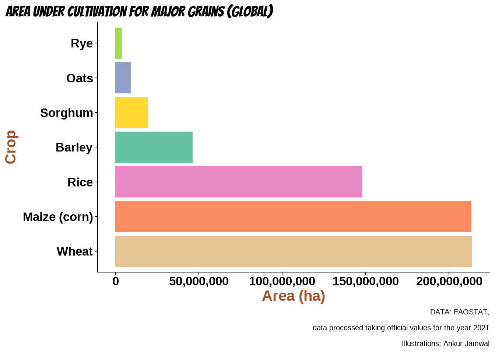
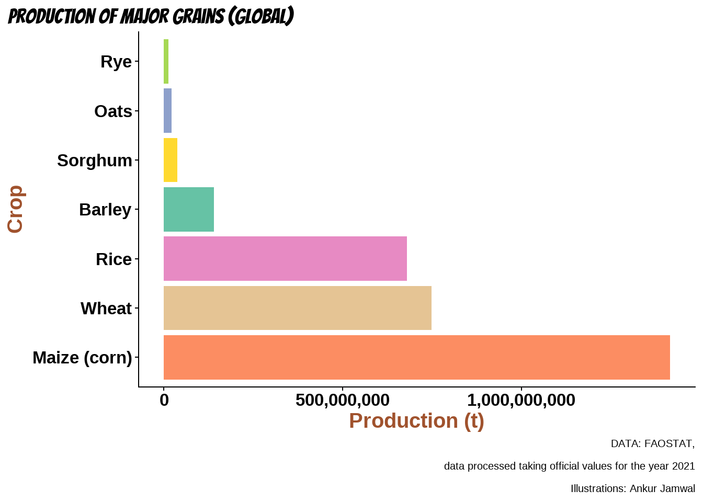
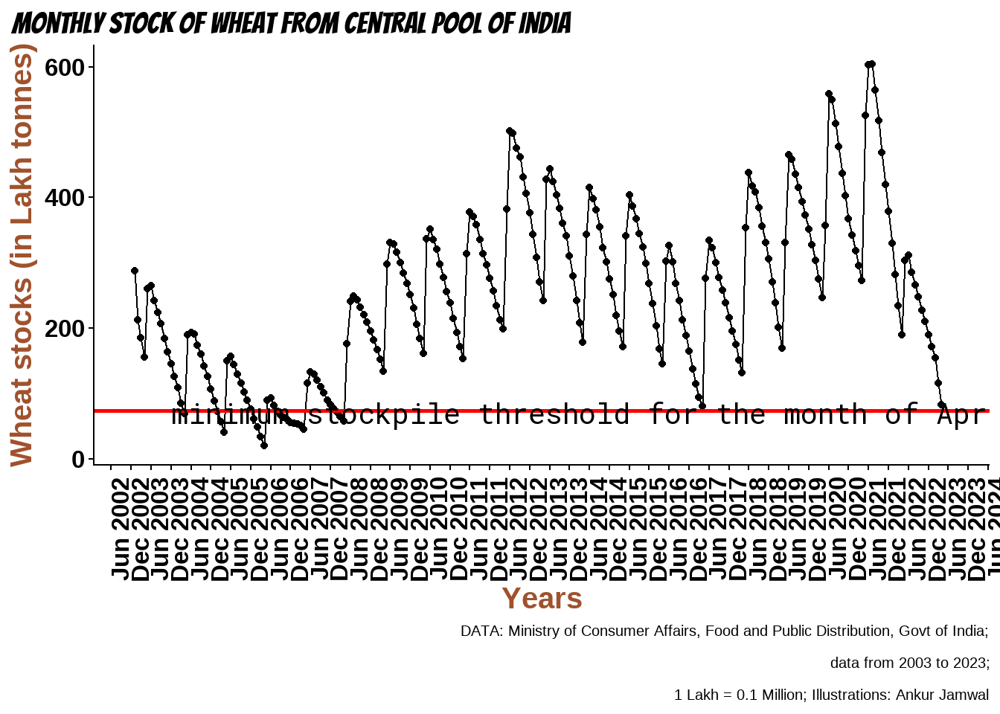
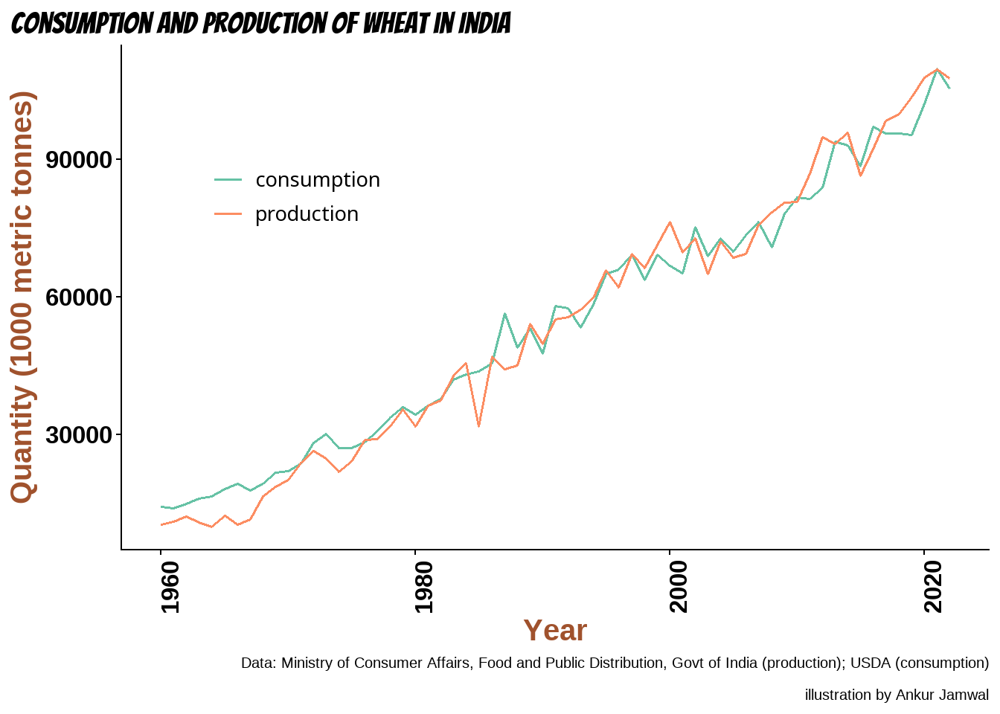
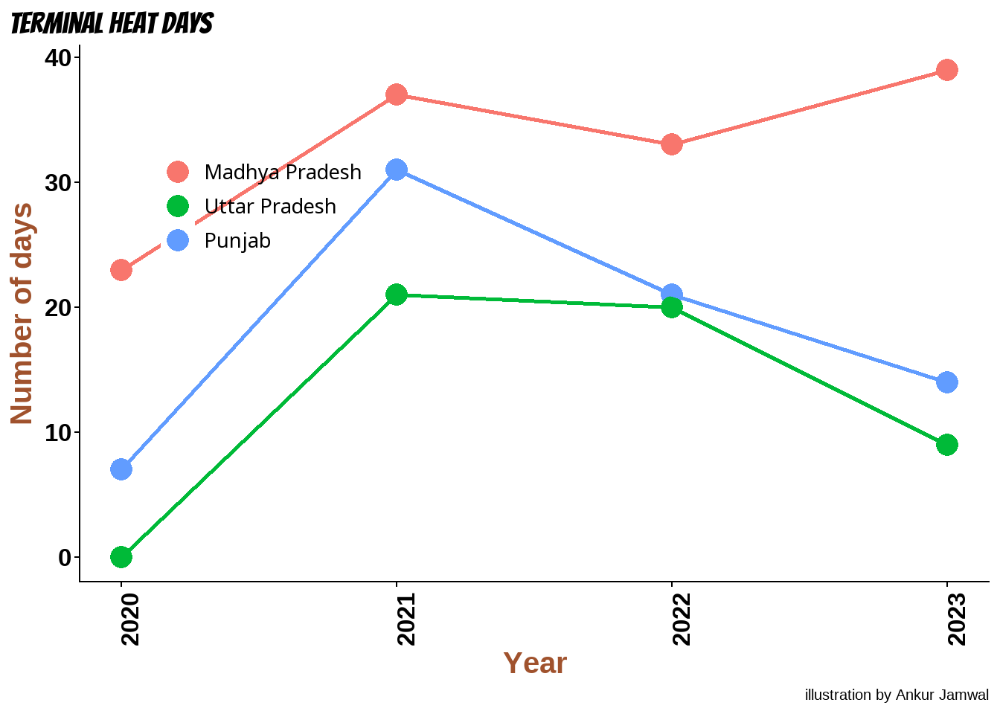

Background
Last update: May 04, 2023
Let us begin by looking at the screenshots of two news headlines from the Reuters website. Pay attention to what the headlines have to say, and the dates when the news articles were published.


These both reports were written by the same reporter, in the same year, but only 16 days apart.
It is a déjà-vu of the year 2022. I was working in an agricultural university and everyone, from scientists to the policy makers, were elated about the swaying bumper wheat crop in the fields. But, as they say, do not count your chicken before they hatch. In a matter of two weeks, the entire standing crop experienced unprecedented heat in the end of February and the crop, that should have turned golden-yellow in a few days, turned dark brown and died. In the same month Russia, the world’s largest wheat exporter and Ukraine, Europe’s bread basket entered war. Most nations were now staring at the impending wheat scarcity and entering agreements to trade wheat. Some countries used wheat as a political tool, perhaps oblivious of the severity of the situation. At least India understood that its own wheat stockpiles were could be affected due to crop damage and an export ban was implemented.
The climate scientists and the IPCC had predicted that winter crops like wheat would bear the brunt of climate-induced aberrations in weather. Perhaps, the year 2022 was an anomaly; after all, weather is unpredictable and you don’t see a major war every year. But, we will soon see that the signs of heat-stress-induced crop failure had started to appear in the year 2021, and it continues into the year 2023. Oh! Those weren’t even the years of El niño, which is forecast to begin in the north-hemispheric summer of 2023.
Let’s dive into some data viz.
Wheat and food security
“Why wheat,” you may ask that. Simple answer to that question would be that wheat is a major global crop. For more details, continue reading…
Wheat is a major global crop - production, consumption and calories
Considering the cultivable area, both corn and wheat stand neck-to-neck. In the year 2021, the corn (maize) was grown in 213,326,425 ha, whereas wheat was harvested from 213,529,260 ha. However, the global maize production in the same year was almost twice that of wheat (1,415,096,806 tonnes of corn vs. 749,000,362 tonnes of wheat). See Figure 2 and Figure 3. Interestingly though, despite more corn production, wheat contributes to approximately 20 % of global calorie consumption against only 10 % from corn. This is due to diversion of most corn harvest for non-human consumption, such as use in animal feed and to make bio fuel. In contrast, wheat is grown primarily for human consumption – approximately 2.5 billion people in 89 countries consume wheat as their staple. Thus, the importance of wheat in food and nutritional security cannot be ignored. This is also the reason why most countries maintain a buffer stock of wheat to feed their population in case of crop failures. India also maintains a buffer stockpile.

How is India’s wheat stockpile?

As can be seen from Figure 4, India’s wheat stockpile have been the lowest, and touched the minimum threshold, since the year 2016. Good news, the the threshold level is intact and the wheat procurement season is underway (as of May 01, 2023). Since wheat is a seasonal crop, cyclical depletion of the stockpiles during the off-season is normal. Also, the government of India had to use its stocks to provide free and cheap grains during the COVID-19 period as welfare measure. Selling off the stocks could have also happened to check the prices of wheat in the market.
However, the bad news is that the stockpile replenishment in the year 2021-22 wasn’t good enough. In fact, it was lowest since the year 2007. Another year of poor wheat production can really stress the stocks.
India’s Consumption and production gap

India’s wheat production and consumption is mostly neck-to-neck (Figure 5). Thus, absence of a healthy stockpile can be detrimental for the nation’s food security if crop failures become a regular feature. Not only will the availability of wheat become a problem, the scarcity of wheat may push the prices higher – resulting in wheat becoming out of reach for many. Perhaps, the export ban of Indian wheat will continue to increase the domestic availability and curb price rise. Inflation has definitely broken backs of many Indian households already.
The Climate Change angle
As we have seen that India’s wheat stockpiles have been dwindling since the year 2021 and it has reached precarious levels in the year 2023. As a consequence, India had to implement an export ban. The situation is also delicate because India consumes almost all its own wheat produce, and a significant decline in production could result in the demand exceeding the supply, causing market shortage and prices of the wheat to rise. No government would like to see a situation where a staple food item creates financial burden over its citizens. But then what is the root cause of the situation that India currently finds itself in? The reasons could be many, including emptying the stores for welfare measures. However, digging a bit deeper into the historical weather data will show that the weather pattern that favours food wheat yield has changed in the years when the wheat supply was stressed.
You see, wheat is a rabi crop. Which means, it is sown in the winter months and harvested just before the peak summer hits the country. This season in wheat growing parts is usually accompanied by low to moderate temperatures, increasing daylight, and low rainfall. Consequently, wheat grows best in the temperature ranging from 18 - 24 ℃ (Ottman et al. (2012) ). Temperature becomes a critical variable in the months of February and March when wheat plant begins to flowering (anthesis) and filling its grain size (milking). Temperatures above 30 ℃ (terminal heat) in the flowering and milking months can cause flower sterility and reduce grain size (Dubey et al. (2020) ) (Figure 6).


Unfortunately, the number of days when the maximum temperature of the day exceeded 30 ℃ have been increasing lately Figure 7 . Average number of days above 30 ℃ in the wheat producing districts of Uttar Pradesh were only 7 in the year 2020, but they increased to 31, 21, and 14 in the years 2021, 2022, and 2023, respectively. Similarly, the days when the wheat crop would have experienced terminal heat have also increased since the year 2020 in Madhya Pradesh, and Punjab.
Such increase in daily temperatures could jeopardize India’s wheat yield and food security, as has been discussed in previous sections. It is necessary that concerted steps be taken to prioritize wheat production and maintaining of stock pile.

Heat stress management
It is essential that suitable agronomic management practices are followed to improve soil moisture. For example, water-efficient irrigation, zero-tillage and fertilization at milking stage. Early sowing may be practiced, if permitted by weather and harvest of preceding crop, to avoid terminal heat. It is essential that research is undertaken at war footings to identify heat-tolerant cultivars and techniques to mitigate biochemical stress due to heat.
Disclaimer
The views are solely of the author. Even though the data source for some illustrations is FAOSTAT, there could be minor discrepancies from the FAO reports. Nonetheless, the overall trend of the data should not vary significantly.
References
Dubey, Rachana, Himanshu Pathak, Bidisha Chakrabarti, Shivdhar Singh, Dipak Kumar Gupta, and R. C. Harit. 2020. “Impact of Terminal Heat Stress on Wheat Yield in India and Options for Adaptation.” Agricultural Systems 181 (May): 102826. https://doi.org/10.1016/j.agsy.2020.102826.
Ottman, M. J., B. A. Kimball, J. W. White, and G. W. Wall. 2012. “Wheat Growth Response to Increased Temperature from Varied Planting Dates and Supplemental Infrared Heating.” Agronomy Journal 104 (1): 7–16. https://doi.org/10.2134/agronj2011.0212.